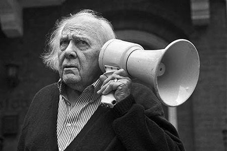

In this assignment, we learn to add custom fonts, as well as how different sizes and weights will
affect the user experience. I attempt to embody the feeling of Ken Nordine's spoken
word poetry with a free font called Sprat, made by an extremely talented designer called Ethan Nakache. Other poems by Nordine can be found on Spotify.
I wanted the words to gradually sink into darkness, which is reflected in the final, murky line of the poetry
as well as Nordine's gravelly voice. I tried to make it so that it's not so noticeable at first, but at the final line you
realize it's difficult to differentiate the difference between the text and the background.
I learned to add custom fonts and also delays! Which I am really fond of.
About Ken Nordine

Ken nordine was an American voice-over and recording artist, best known for his series of word jazz albums.
His deep, resonant voice has also been featured in many commercial advertisements and movie trailers.
One critic wrote that "you may not know Ken Nordine by name or face, but you'll almost certainly recognize his voice."
He is of Swedish descent and has been heard on The World's Great Novels and other radiobroadcast programs in Chicago. His best known works are his narrations on
the aural vignettes on Word Jazz (Dot, 1957). Love Words, Son of Word Jazz (Dot, 1958) and his other albums in this vein.
They feature Nordine's narration over cool jazz by the Fred Katz Group featuring Chico Hamilton recording under an alias.
About Ethan Nakache
Ethan Nakache is a French type and graphic designer based in France. He graduated from a bachelor's degree in graphic and type design from ENSAV La Cambre, Brussels in 2019.
His main focus is type design and editorial design, creating and using type to produce efficient design.
Sprat is a sharp serif variable font, developed on two axes: width and weight. It was inspired by an old lettering from Eric Gill. It features long sharps serifs, a high contrast between thin and thick and a round design for the curves. its appearance changes a lot between styles, the thins styles have more of a hard and aggressive look, the blacks are smoother but keep their attitude!
Its use is mainly suitable for titling, poster, logo but depending on the style Sprat also works in a mid-sized body text.